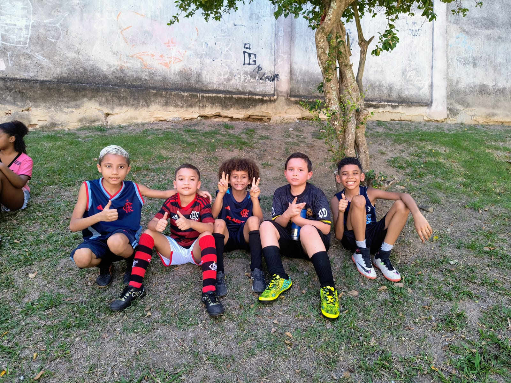

No confronto entre Flamengo e Real Cria, logo no início, Guilherme coloca a mão dentro da área de sua defesa e o juiz marcou pênalti. Theo cobrou e abriu o placar. Mario Jr ampliou para o Flamengo. Com chute forte, Miguel, do Real Cria, quase diminuiu a diferença no placar. O Flamengo continuou a pressão, mas esbarrou em ótima defesa do goleiro Enzo. A pressão do Flamengo continuou e Kauê Kevyn aumentou o placar marcando seu gol. Destaque da partida, o excelente jogador Luan Gabriel quase marcou um gol. Davi Lucas aumentou para o Flamengo e Luan Gabriel descontou para o Real Cria. Fabiano e Theo fecharam o placar de Flamengo 6 x 1 Real Cria.

Time do Real Cria antes do jogo. Luan Gabriel foi o destaque do time. (Foto: Andreia)